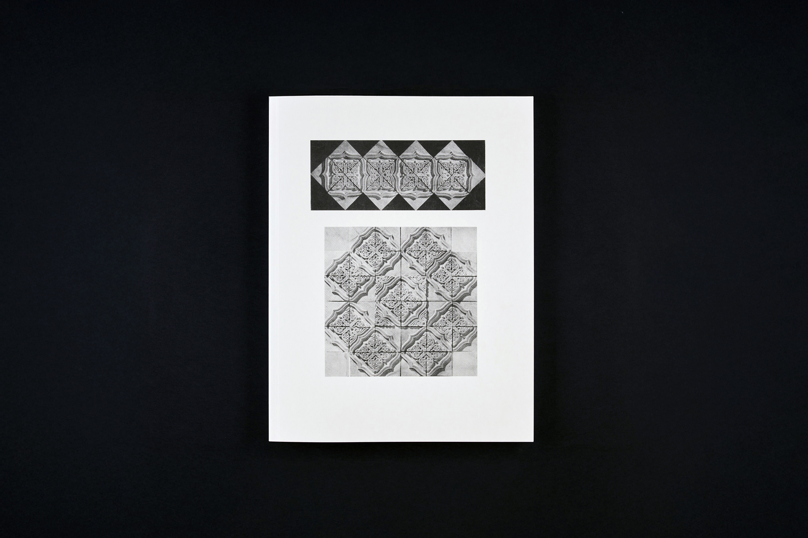
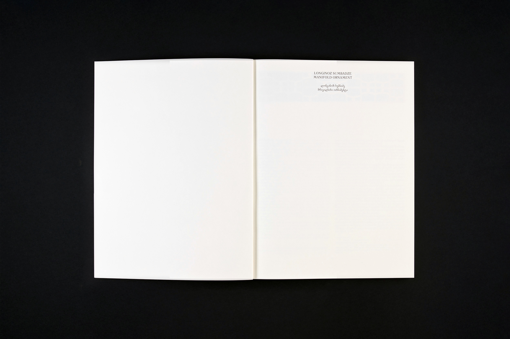
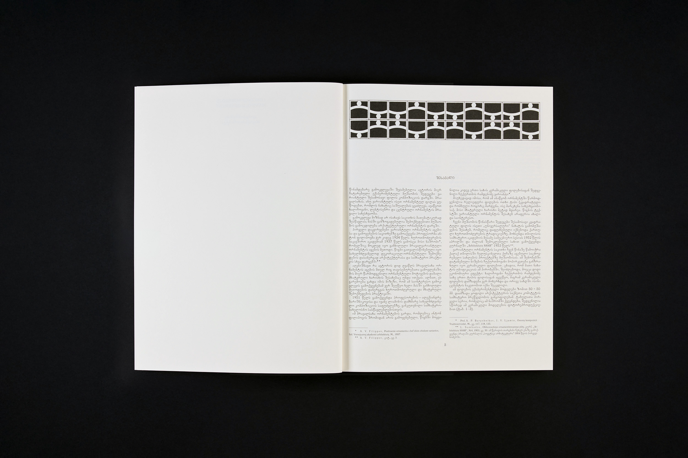
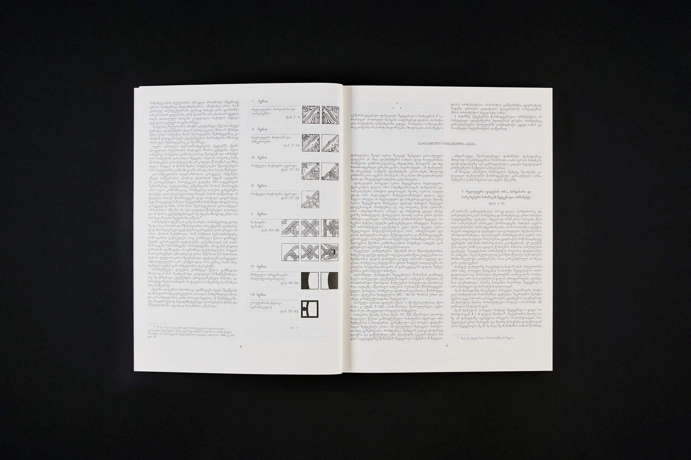
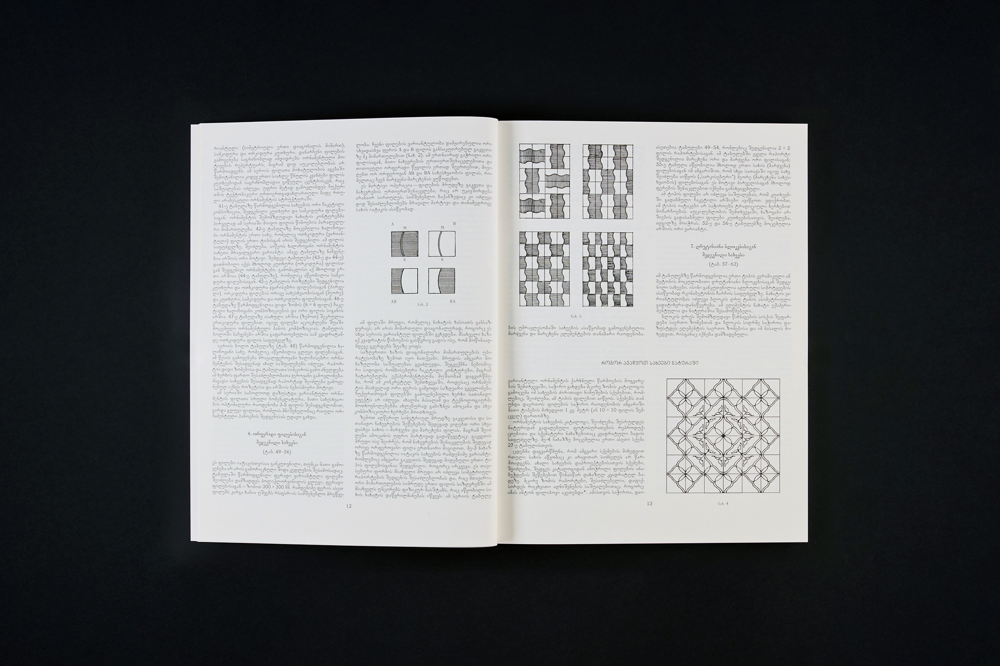
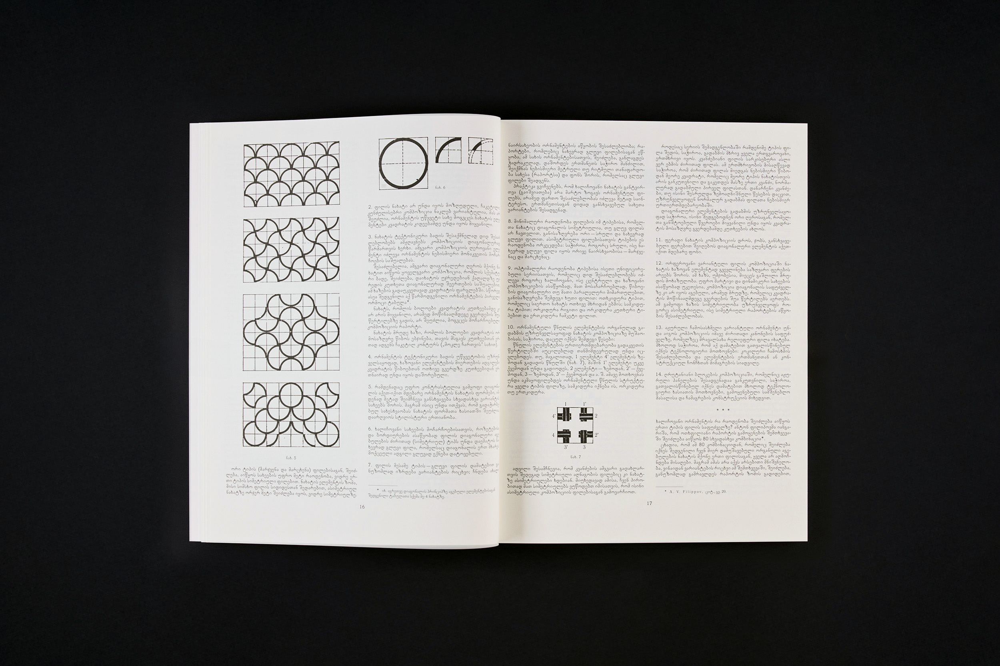
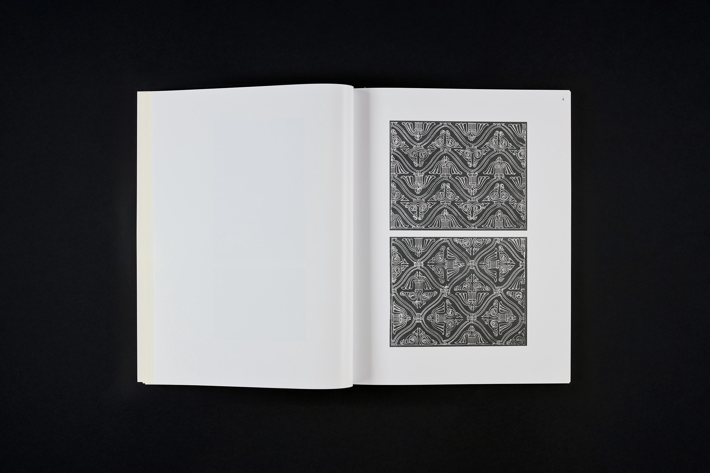
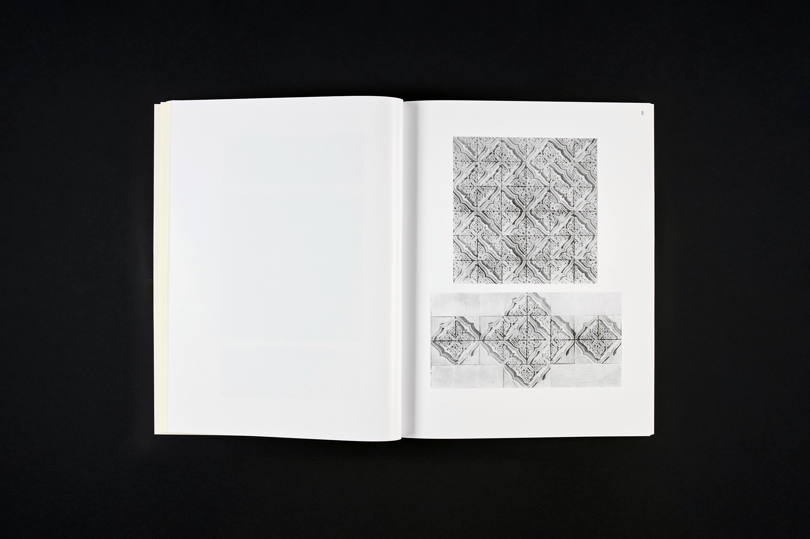
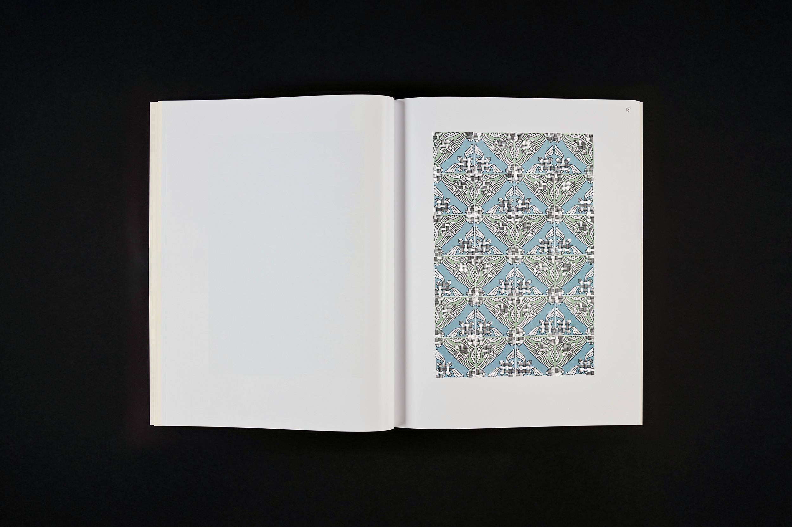
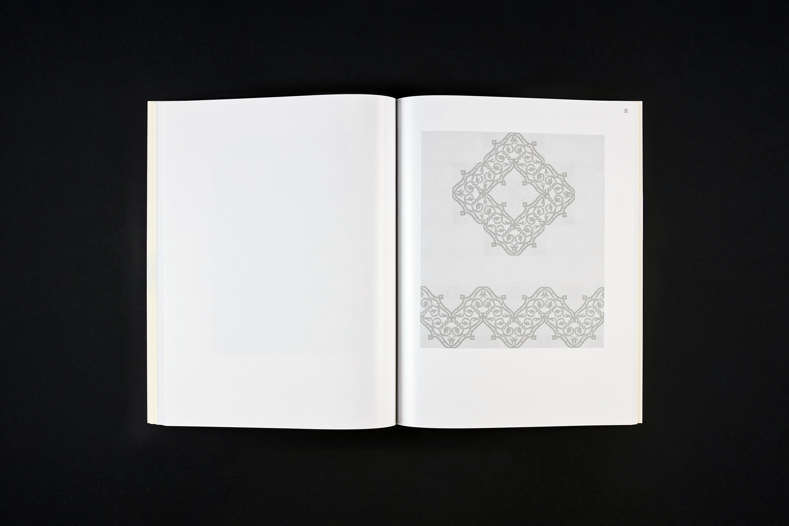
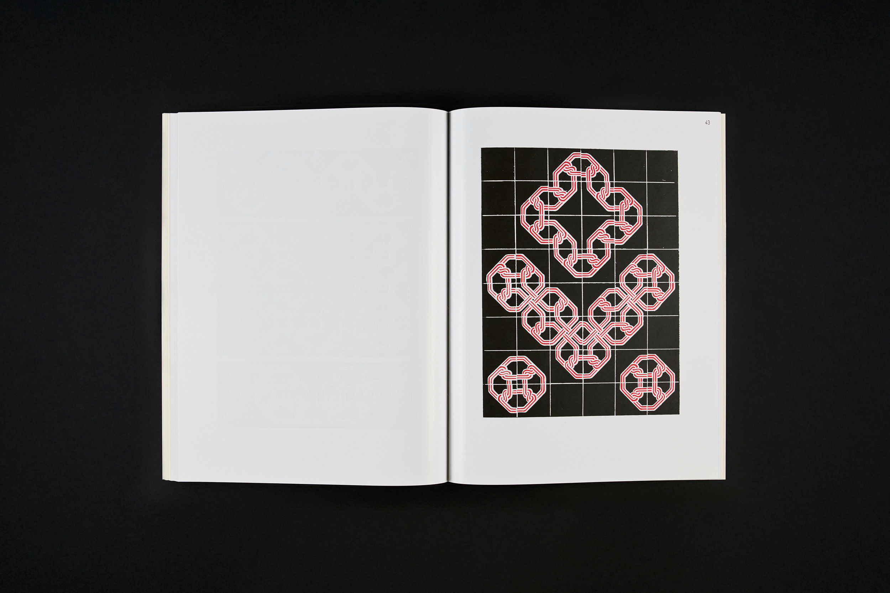
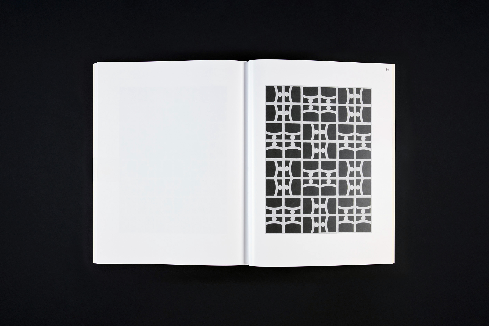
Longinoz Sumbadze
Manifold Ornament
This publication reprints Longinoz Sumbadze's 1963 research "Manifold Ornament." The work bridges architecture, geometry, and artistic composition, exploring compositional variations of square-based elements. Beyond its original architectural focus, this research holds renewed relevance today. Its variability principle aligns with digital generative algorithms, offering contemporary artists a mathematical framework for creativity. Whether through digital or traditional techniques, the work's approach remains valuable. As Sumbadze notes, "Creating patterns from repeatable elements is not mechanical but creative." The publication includes seven series of tables demonstrating variable elements unified by compositional principles of variability and multiplicity.
26x34 cm
168 pages
English, Georgian
ISBN 978-9941-8-6722-4
2024
ლონგინოზ სუმბაძე
მრავალსახა ორნამენტი
პუბლიკაცია 1963 წელს მცირე ტირაჟით დაბეჭდილი ლონგინოზ სუმბაძის კვლევის „მრავალსახა ორნამენტი“ რეგამოცემაა. კვლევა სამი დარგის – ხუროთმოძღვრების, გეომეტრიისა და მხატვრული კომპოზიციის შეხების საზღვრებზეა აღმოცენებული და კვადრატის საფუძველზე დამუშავებული ვარიანტული ელემენტის კომპოზიციურ შესაძლებლობებს წარმოადგენს. წმინდა არქიტექტურული საწყისი პრობლემისგან დამოუკიდებლად, შეიძლება, მოცემულ ნაშრომს დღეს ახალი ინტერპრეტაცია მიეცეს. ვარიანტულობის პრინციპი ახლოს დგას გენერატიული ალგორითმების ციფრულ პოეტიკასთან. შესაძლებელია ამგვარი მათემატიკური ხედვის თანამედროვე ხელოვანებისთვის საინტერესო საწყისად ქცევა. ვფიქრობთ, რომ ვარიანტულობის იდეის ალგორითმული რეალიზაციის გარდა, შეთავაზებული თამაში დღესაც საინტერესო იქნება არაციფრული ტექნიკის გამოყენებით შემოქმედებითი პროცესის განსავითარებლად. ავტორის თქმით, “სხვადასხვა ასაწყობი ელემენტებისაგან რაიმე სახის შედგენა მექანიკურ პროცესს კი არ წარმოადგენს, არამედ გარკვეული შემოქმედებითი პროცესია”. ტაბულების შვიდი სერია შეიცავს ბევრ ვარიანტულ ელემენტს. ასაწყობ ელემენტებს აერთიანებს კომპოზიციის აგების პრინციპი, რაც მათი მრავალსახოვნებითა და ვარიანტულობით გამოიხატება.
26x34
168 გვერდი
ქართული, ინგლისური
ISBN 978-9941-8-6722-4
2024